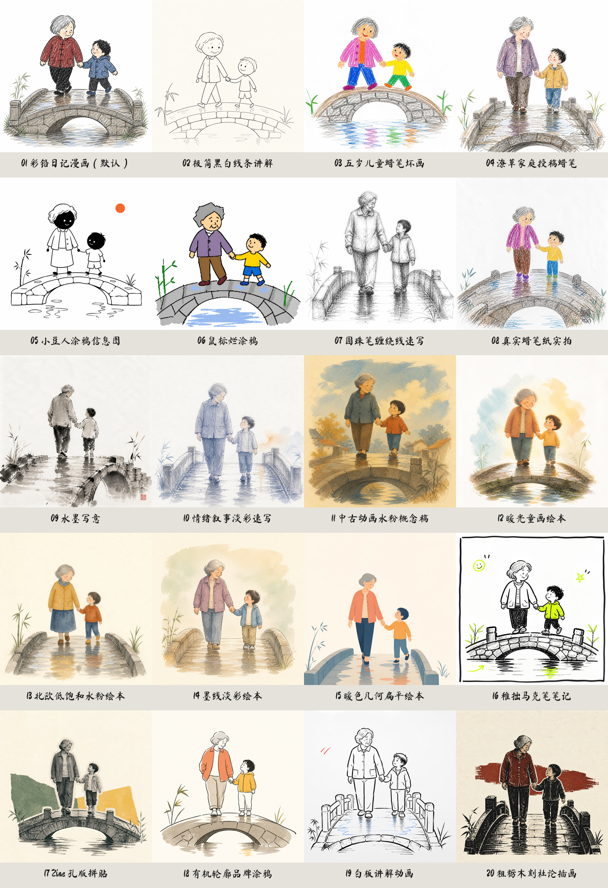
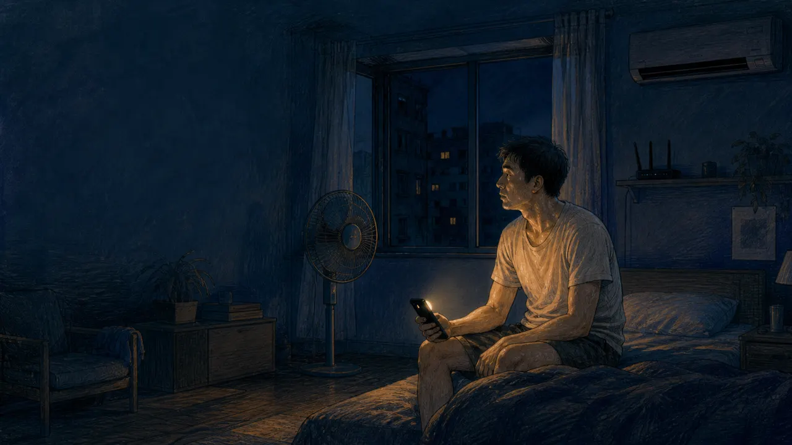

01 / 05问题进入
这一幕让观众完成什么
- 画面任务
- 旁白任务
- 证据位置
KNOWLEDGE → UNDERSTANDING → VISUAL STORY
LATEST GENERATION · STORY-FIRST × CODEX × MINIMAX
新增“为什么 AI 那么耗电”完整样例：先锁定 IEA 事实和五幕讲解，再由 Codex 统一最终视觉、MiniMax 生成旁白，最后确定性合成。下方同时保留天空科普样片，便于比较两种知识解释。
FACT → STORY CONTRACT → VISUAL ALIGNMENT → TRANSFER
核心不是罗列能耗数字，而是让观众看懂：AI 的“云”仍是物理系统，用电发生在计算、数据搬运和散热；单次请求与大规模持续调用不能混为一谈。
QUESTION → MECHANISM → TRANSFER
这条样片重点验证生成结果本身：蓝黄人物锚点是否稳定、看不见的散射能否被画懂、正午蓝与日落橙能否既形成视觉高潮，又保持同一条科学因果链。
01 · KNOWLEDGE STORY STUDIO
三道题分别检查核心概念、误解修正和新情境应用。
02 · VERIFIED CAPABILITY
改变左侧输入和配置，中间预览、场景时间轴、右侧命令与输出契约会同步更新。它复现的是上游控制面，不会消耗图片额度。
小雨停了。
20 STYLE RECIPES
下面展示上游随仓库提供的真实风格参考图；统一使用“祖孙过桥”题材，便于直接比较笔触、色彩和造型差异。点击任一风格会同步回控制台。

UPSTREAM REFERENCE当前风格 · 上游真实参考
colored-pencil-diary
适合家庭故事、生活日记。点击下方卡片切换；中央舞台展示的是合成机制模拟，不等同于模型生成质量。
UPSTREAM COVERAGE
控制台与源码契约逐项对应；带“已演示”的项目都能在本页操作或观察。
内联文本或 UTF-8 文件，规则分句、字幕换行、动态时长。
已演示原序导入、SHA-256 去重、auto/composite/full 版式。
已演示character lock、visual plan、风格指纹和批次 hash。
已解释manifest 驱动 Agent，或显式使用 OpenAI API。
已演示字体优先保证原文准确，图像字幕追求手写一致性。
已演示一张母版本地派生对齐黑白层，从左到右揭示。
已演示直接串联，或 SVG 曲线与阴影模拟右下角卷页。
已演示720×960 快速确认，1080×1440 正式输出。
已演示文本/图片 × 预览/正式，均为 H.264 静音画面轨。
已演示03 · INTEGRATE & EXTEND
先播放家庭记忆案例，再在导演台切换知识解释、儿童成长、悬疑档案、品牌起源与诗性独白。六条样片都包含真实生图、独立 MiniMax TTS、烧录字幕、镜头运动、差异化转场和 H.264/AAC 成片。
REAL CAPABILITY CASE · 01
一张由残片和生成模型拼合的团聚照，能否进入历史档案？它不把问题简化成“AI 是好是坏”，而是让事实证据、生成来源和真实思念同时被看见。
五节拍：原则 → 谜题 → 供认 → 质问 → 选择。
4 张成人淡彩分镜，锁定顾岚的银发、眼镜、绿衫与锈红围巾。
MiniMax Speech 2.8 HD · `female-chengshu` · calm；5 段音频按真实时长拼接。
轻微镜头推进、0.4 秒淡化转场、ASS 中文字幕与暖色回环。
ffprobe 验证 H.264、AAC 双声道、720×960、54.333 秒。
MiniMax 实际调用：使用中国区官方同步语音合成 API（api.minimaxi.com/v1/t2a_v2），模型 speech-2.8-hd、成熟女声 female-chengshu、calm 情绪。Token 只在本地进程内读取，没有进入页面或仓库。
STORY → EFFECT FIT LAB · LOCAL & EXPLAINABLE
输入一段内容，实验台会识别人物关系、解释意图、行动成长、证据链、品牌选择、诗性意象、古诗结构与科技系统，给出八类处方的完整分数和前三推荐。分析在浏览器本地完成，不上传内容，也不冒充大模型判断。
选择一个快速样例，或输入自己的故事。
规则推荐只能提供起点，不能替代事实、版权、品牌或专业审阅。
SEVEN REAL RECIPES · SIDE BY SIDE
比较的不只是画风，而是每类故事如何组织证据、节奏、声音和结尾。
RULE-BASED NARRATIVE DIRECTOR · PRODUCT PROTOTYPE
选择故事类型，观察视觉风格、色彩、镜头、转场、声音和五段叙事如何一起变化。这里演示的是可检查的导演规则，不是伪装成实时 AI 的随机推荐。
从修复动作进入人物，不先解释背景；“只让事实留下证据”成为后续冲突的尺度。
PRESCRIPTION → REAL MEDIA
这不是通用白板模板换了一段文案，而是让故事结构决定效果：误区用“胶片脑袋”，模型固定三节点，机制用碎片重组，证据用两种提问对照，最后把理解迁移成可执行的记录方法。
speech-2.8-hd、female-chengshu、neutral；句间停顿与画面节点对齐。PRESCRIPTION → REAL MEDIA
儿童成长不靠成人说出道理，而靠行动方式真正改变：小满先用蛮力失败，再从芦苇和麻雀理解风，把过去的奖带变成新的尾翼，最后带着可见补丁完成第二次尝试。
speech-2.8-hd、female-tianmei、calm、0.96×；失败段不煽情，结尾不喊口号。PRESCRIPTION → REAL MEDIA
这条悬疑不是用惊吓制造答案，而是让旧钟、暗道、长大衣和磁带逐次改变含义。结尾也不把越界行为浪漫化：原报告、录音、口述证词与维护记录分别进入可核验的证据层。
speech-2.8-hd、male-qn-jingying、calm；结尾登记违规进入，不用英雄化覆盖证据责任。PRESCRIPTION → REAL MEDIA
这不是虚构一组销量数字来证明品牌，而是追踪同一把弯木椅：裂缝提出问题，珊瑚色蝴蝶榫让修补可见，工艺允许别人复查，一年后的普通脚垫复检说明承诺边界，最后把责任变成任何人都能返回的修理台。
speech-2.8-hd、Chinese (Mandarin)_Sincere_Adult、calm、0.98×；不虚构背书，不许诺永远不坏。PRESCRIPTION → REAL MEDIA
诗性不是把逻辑藏起来。渡口、桥、录音机和朱红线在五幕里重复出现，但每次改变含义：从寻找旧名，到承认记忆不是证据，再到承认新桥的便利、放弃在石面刻名，最后带走线索而不强迫地点恢复成童年。
speech-2.8-hd、Chinese (Mandarin)_Lyrical_Voice、calm、0.94×，叠加极轻河岸声与段间留白。READ → SEE → UNDERSTAND
这不是把字幕从底部搬到右边。原诗始终在场，五幕依次改变当前句、关键词、释义和画面证据；观看者可以一边听，一边知道“现在解释哪一句、为什么出现这个画面”。
VIVID COLOR → MEMORY → REAL MEDIA
江南好，风景旧曾谙。
日出江花红胜火，春来江水绿如蓝。能不忆江南？
鲜明不是把饱和度拉满。五幕让“好”先成为可进入的空间，再用日出解释花红、用春水承接蓝绿，最后让颜色转化为“旧曾谙”的记忆清晰度。
NIGHT COLOR → DISTANCE → REAL MEDIA
月落乌啼霜满天，江枫渔火对愁眠。
姑苏城外寒山寺，夜半钟声到客船。
五幕依次建立天时、江岸、人、空间与声音：先感到霜夜，再沿渔火进入未眠者视角，最后让钟声跨过距离完成诗。
INTERACTIVE PRELUDE · 约 8 秒 · 随时可恢复
这不是另一支视频。你会先触发一次局部模拟停电，再从房间里的设备反向看见电力系统。

制冷停止 网络进入倒计时 冷藏依赖供电 泵与电梯可能受影响LIVED EXPERIENCE → INVENTION CHAIN → SYSTEM
一次闷热、焦虑、无法入睡的停电，让“电”从无形背景变成叙事主角。成片先保留亲历感，再沿可控电流、电磁感应和供电系统回望：伟大的不只是一只灯泡，而是让无数发明彼此协作的网络。
最适合：能源与工程史公共教育、城市韧性与家庭应急、基础设施品牌责任、从亲历事件进入知识的科技人文短片。
不适合：实时灾害通报、操作型电气安全指导，或把复杂历史压缩成单一英雄传。
能力边界：当前选择与处方由本地规则表确定，因此离线、无 API 也能操作；接入大模型后，应由模型提取人物、物件、冲突和主题，再落入同一套可审阅处方，而不是让模型直接跳到不可控的成片。
跨平台 CLI、schema、干净克隆测试、依赖安全和视觉回归。
分镜时间轴、单场重生成、人工批准、TTS/SRT 与多比例。
人物、文字、裁边、风格和安全评分，失败场景自动重试。
供应商适配器、style pack、队列、对象存储、云渲染和成本观测。
04 · USE SCENARIOS
最适合的是有明确学习目标、可核验材料和可视觉化关系的内容；生成只是手段，理解、可信与迁移才是结果。
有学习目标、有材料依据、关系可以被画出来：适合。依赖实时操作、连续表演或未经审阅的高风险判断：换工具或增加专业工作流。
前置知识、分龄难度、常见误解、课堂任务与观看前后测。
来源引用、版本日期、事实等级、专家审阅与高风险主题审批。
单幕重生成、角色锁、TTS 供应商、成本、重试、横竖屏和多语言。
理解率、误解减少、知识迁移、教师反馈与版本对比，而非只看播放量。
PRODUCT & RESEARCH EVIDENCE
知识工作台使用可解释的本地规划规则；真实执行证据来自固定上游、Codex 生图、MiniMax TTS、字幕与十二条 H.264/AAC 视频。任意新主题的正式媒体生成仍需进入安全的后端生产任务。